Pill Retractable Leash

Pill Retrectable Leash
Redesigned from PetMate Translucent Palm Retrectable Leash

Pill Retrectable Leash
Redesigned from PetMate Translucent Palm Retrectable Leash
This link contains STL file of the upper and bottom molds.
Tools: Power Spring & Spool from a PetMate Translucent Palm Retrectable Leash, Caliper, PLA, Rhino, Cura, & Ender 3 Pro
My ultimate goal is to reimagine the current retractable leash that has lasted over hundred years and solve the current problems that users have with it. For this project, I want to build a working prototype of the new concept of the retractable leash that I came up with.
The "pill" concept of the reimagined retractable leash (figure 1) could possibly help users have better walking experience with their dogs.
Figure 1. The "pill" schematic
The leash allows user to hook their leash on to anywhere easily (figure 2); free their hands when needed (figure 3), safely attach poop bags - both used and unused (figure 3), and hold the housing in a more balanced way.
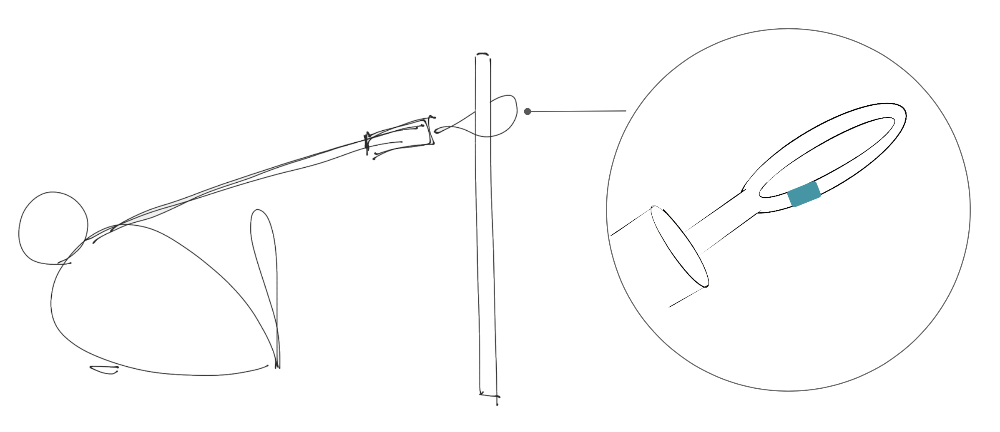Figure 2. The handle in the leash could open and close easily which enables users to fix it anywhere easily.
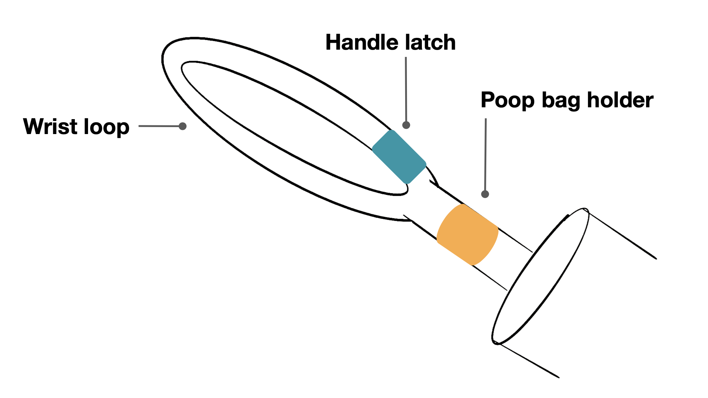Figure 3. The handle in the leash could open and close easily which enables users to fix it anywhere easily.
The working prototype needs to meet the features and components requirements on the schematic (figure 4). However, for this assignment, I am going to mainly work on the housing part due to the time limits.
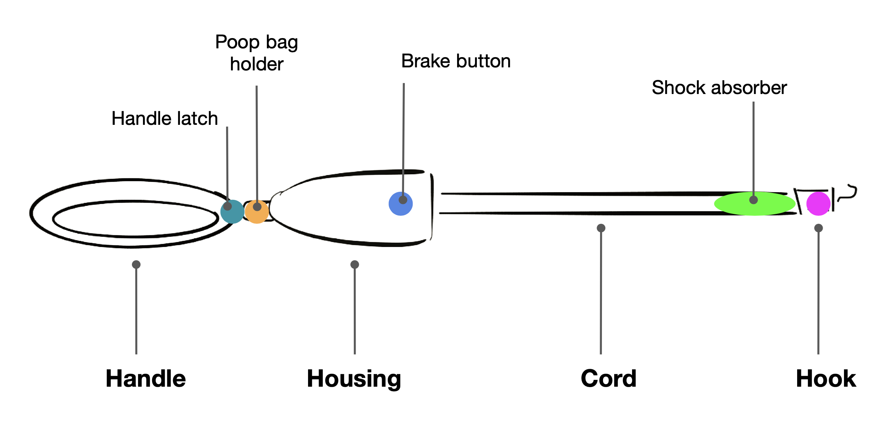Figure 4. The "pill" schematics - features and components
First thing I will do for creating the housing is to learn how the current leash mechnism works inside of the housing. There are mainly 6 compartments for the current leash (figure 5).
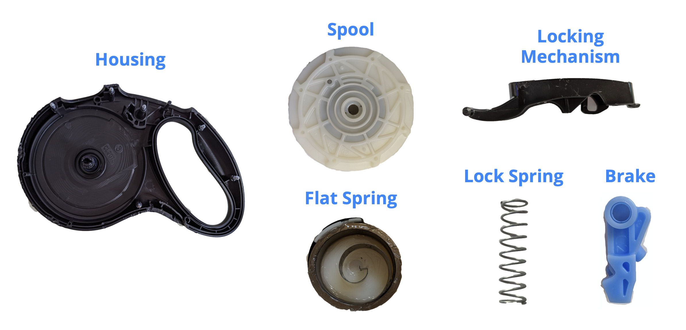Figure 5. The "pill" schematics - features and components
After I learn how it works, I am going to design a housing of the "pill" on 3D design tools such as Rhino or Solidworks, and 3D render it to feel how the end product would look like. If I am satiesfied, then I am going to build inside of the housing that can take all the brake buttons with locking mechanisms, spools, flat spring, and lock springs to work well together. I will create everything on my own with 3D printer except the springs.
Figure 6. PetMate Palm Retrectable Leash
I got this one from Amazon.
 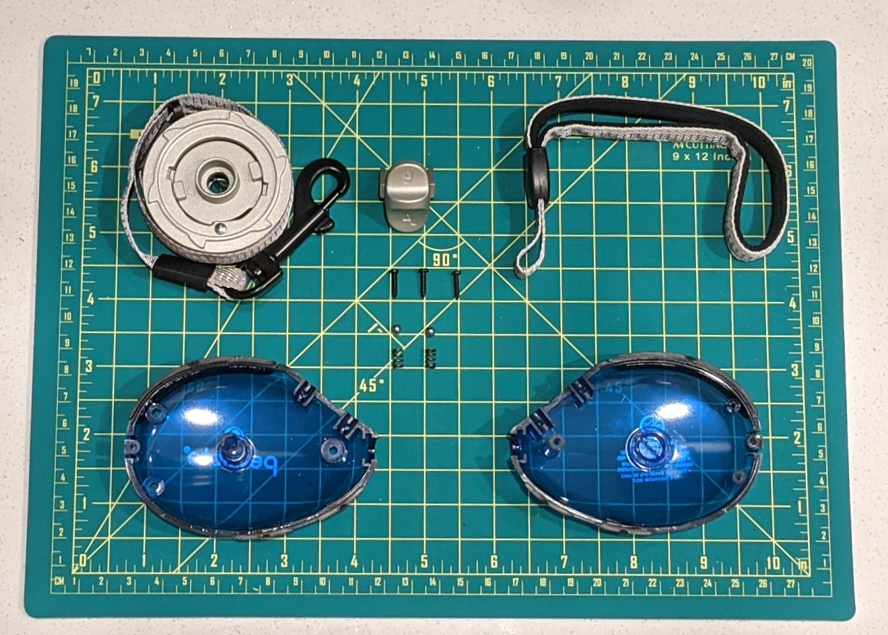
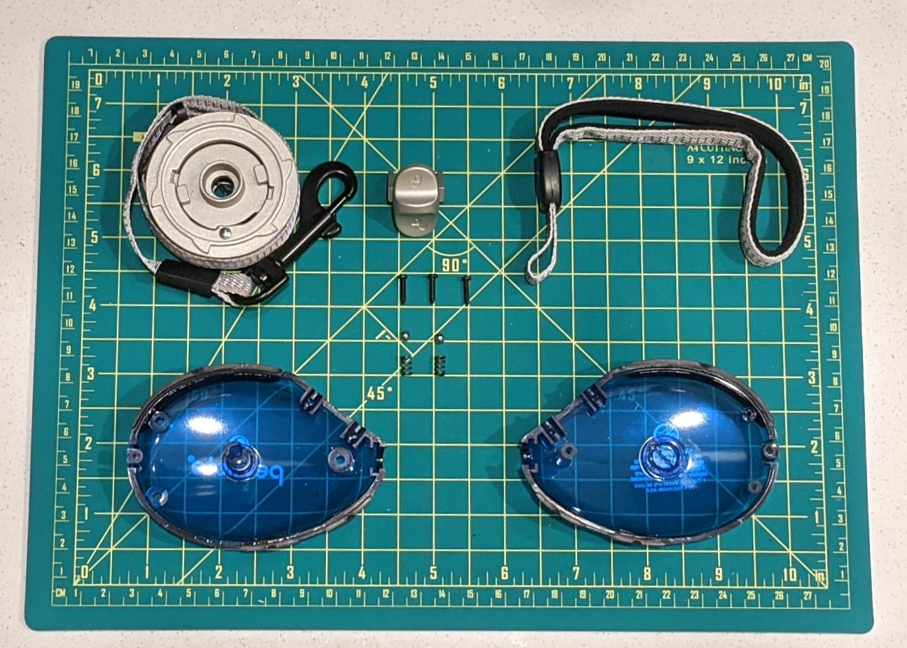
Figure 7. Disassembled PetMate Palm Retrectable Leash
Figure 8. Measurements of the Parts from a PetMate Palm Retrectable Leash
 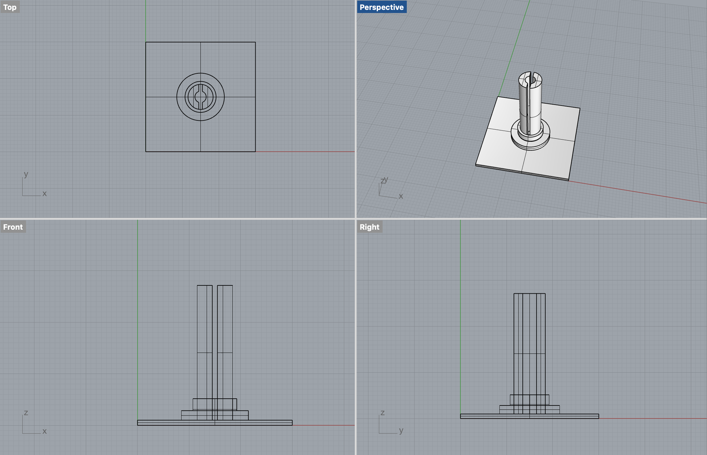
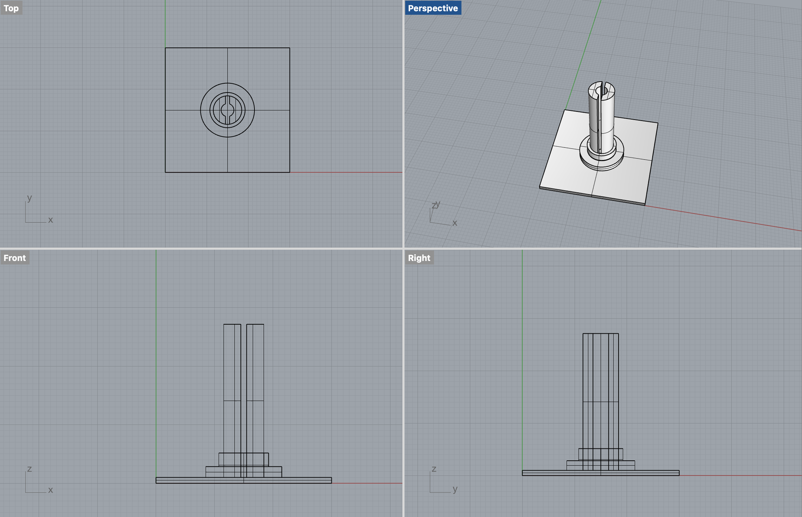
Figure 9. Two parts that allow retrectable mechansim are designed on Rhino.
Figure 10. Retrectable Mechanism Testing
Figure 12. Toilet Paper as a Reference
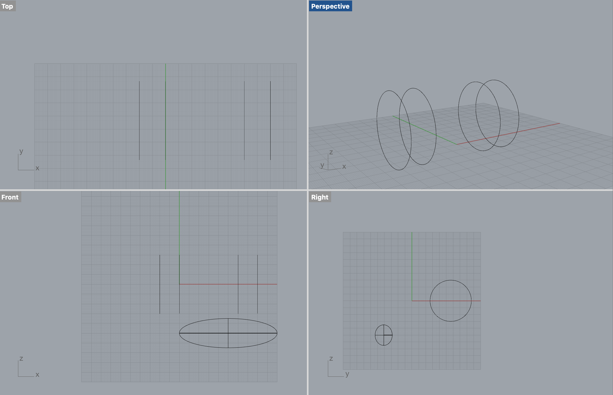 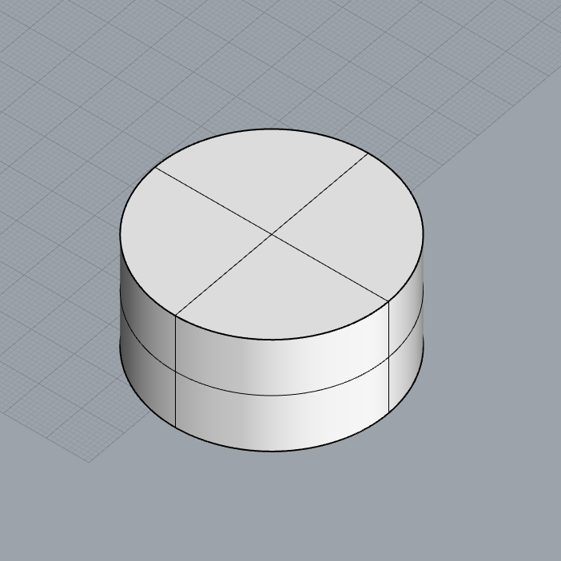 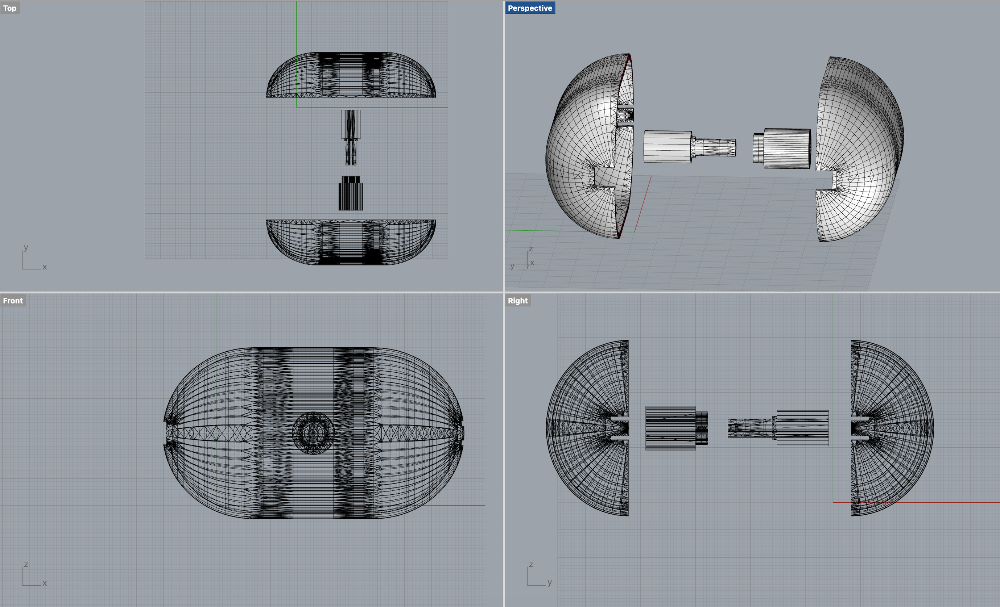 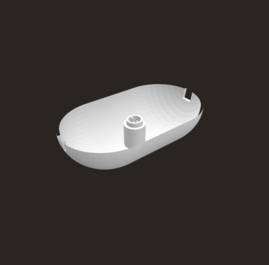 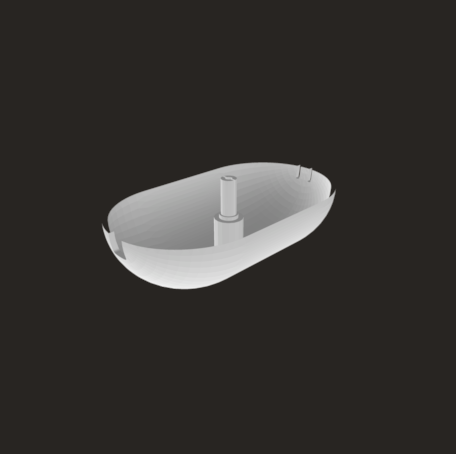 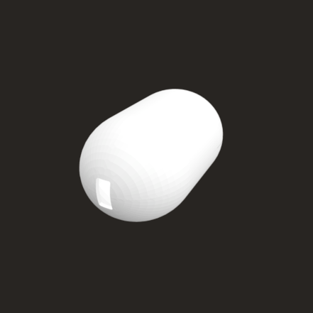Figure 13. Housing of the Pill Retrectable Leash
Figure 13. Output of Housing
1. Work on a break mechanism
2. Create nail holes on the housing